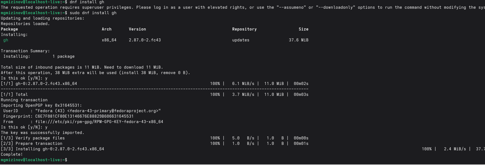
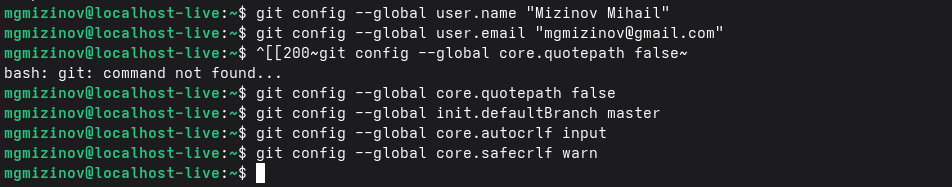
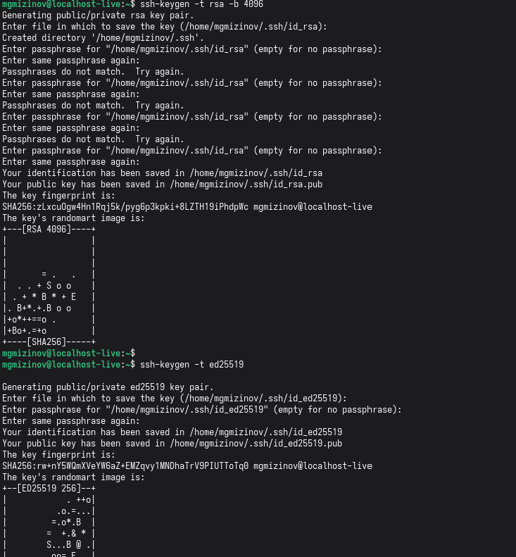
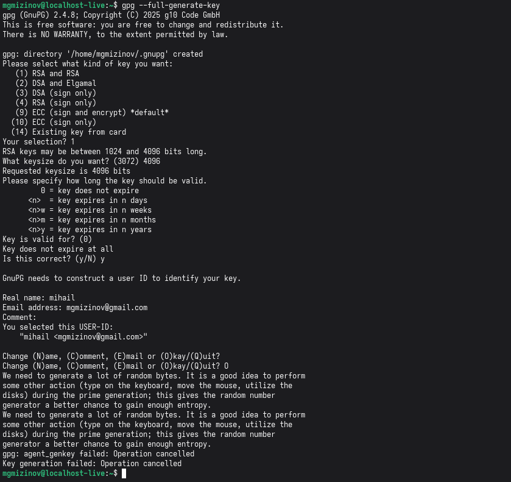
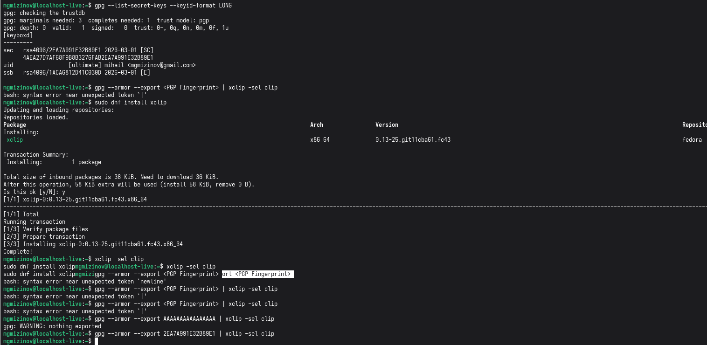
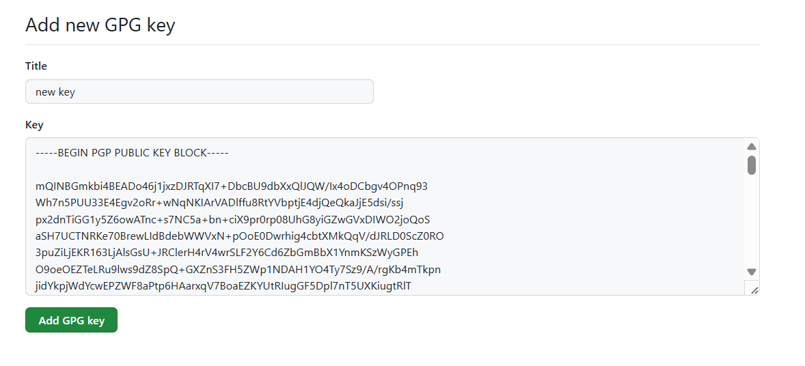
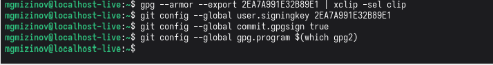
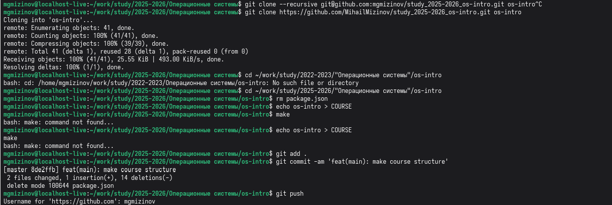

Лабораторная работа 2
Выполнил Мизинов Михаил НКАбд-04-25
Цель работы
Изучить идеологию и применение средств контроля версий. Освоить умения по работе с git.
Выполнение работы
Установка git и gh.

Риcунок 1 - Установка git и gh
Завершили базовую настройку git

Риcунок 2 - Завершение базовой настройки git
Установили ssh ключи

Риcунок 3 - ssh ключи
Создание ключа pgp

Риcунок 4 - pgp ключ
Добавление PGP ключа в GitHub

Риcунок 5 - pgp ключ копирование

Риcунок 6 - pgp ключ добавление в git
Настройка автоматических подписей коммитов git

Риcунок 7 - автоматические подписи
Сознание репозитория курса на основе шаблона и настройка каталога курса

Риcунок 8 - редактирование репозитория
Выводы
Изучил идеологию и применение средств контроля версий. Освоил умения по работе с git.